|
|
| sea anemones text index | photo index |
| Phylum Cnidaria > Class Anthozoa > Subclass Zoantharia/Hexacorallia > Order Actiniaria |
| Swimming
anemone Boloceroides mcmurrichi Family Boloceroididae updated Jul 2024
Where
seen? Looking like an untidy mop, this anemone
is sometimes seen in seagrass areas on many of ourshores. It is possibly
seasonal. Sometimes, large numbers are seen (up to 10-20 animals in
a trip) and then none at all. Once, we encountered an explosion of
countless tiny swimming anemones (less than 1cm across) in the seagrass
meadows of Chek Jawa. |
 Sometimes with white band next to the mouth and two paler tentacles. Pulau Sekudu, Jun 06 |
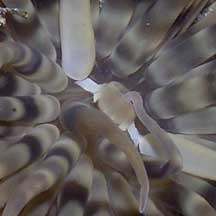 Mouth is on a cone in the centre. |
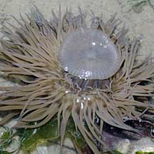 Short body column and small pedal disk. Changi, Apr 10 |
| Does it really swim? Yes it can swim slowly by undulating its many tentacles in a coordinated manner. At low tide, these anemones are often seen loosely attached to seaweeds, or just lying freely on the ground. They are rarely seen swimming about. Possibly they are more active at high tide. Please don't pick up the anemone to force it to swim. Its sticky tentacles will come off in your hand and you may hurt the anemone. |
|
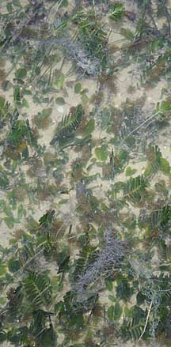 Explosion of tiny swimming anemones. Chek Jawa, Oct 10 |
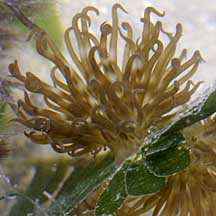 Many had settled on seagrasses. |
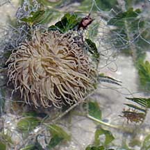 Adult (left) compared to tiny one (right). |
|
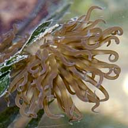 |
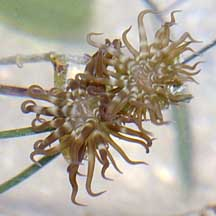 |
| Losing it: The swimming anemone
can purposely drop of its tentacles if it is threatened. The dropped
tentacle can wriggle, probably to distract the predator. This dropped
tentacle can regenerate into a new swimming anemone after some time.
However, almost no other anemone does this. So please don't cut
an anemone into half hoping to get two anemones. You will instead
get no anemone. What does it eat? The swimming anemone harbours symbiotic single-celled algae (called zooxanthellae). The algae undergo photosynthesis to produce food from sunlight. The food produced is shared with the anemone, which in return provides the algae with shelter and minerals. Status and threats: As at 2024, it is assessed not to be approaching the criteria for being listed among the threatened animals in Singapore. |
|
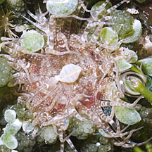 Reddish with spots. 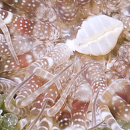 Cyrene Reef, Aug 11 |
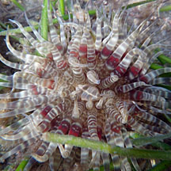 Reddish with bands. 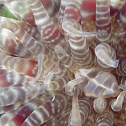 Cyrene Reef, May 12 |
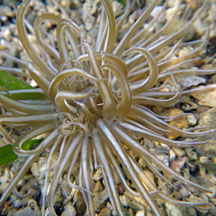 Brown with white stripes. 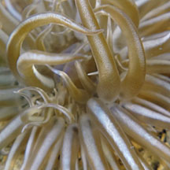 Cyrene Reef, May 12 |
| Swimming sea anemones on Singapore shores |
On wildsingapore
flickr
|
| Other sightings on Singapore shores |
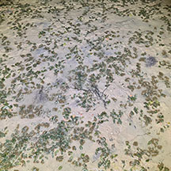 Explosion of tiny ones. Changi SAF Chalets, May 25 Photo shared by Adriane Lee on facebook |
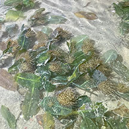 |
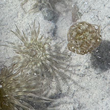 |
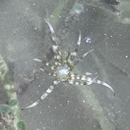 Many tiny ones with few arms seen Seringat Kias mangrove lagoon, Sep 25 Photo shared by Adriane Lee on facebook. |
| Filmed on Cyrene
Reef, Dec 10. |
Links
|